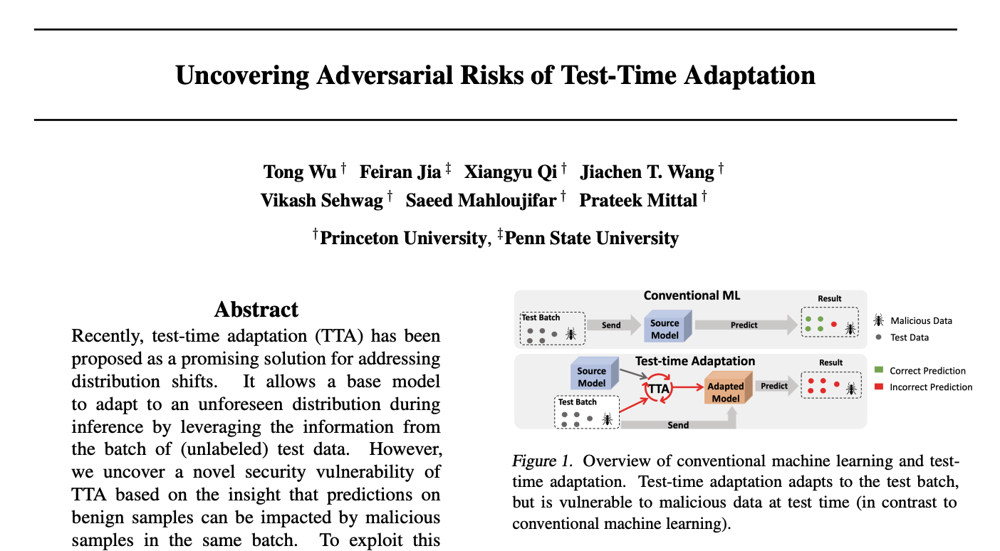

Test-time Adaptation (TTA), where a model is modified based on the test data it sees, has been a promising solution for distribution shift. This paper demonstrates that TTA is subject to novel security risks, where malicious test data can cause predictions about clean and unperturbed data to be incorrect. This suggests that adaptive model (model relies on the interaction of test inputs) have yet another attack vector that can be exploited. [Source]
Recently, test-time adaptation (TTA) has been proposed as a promising solution for addressing distribution shifts. It allows a base model to adapt to an unforeseen distribution during inference by leveraging the information from the batch of (unlabeled) test data. However, we uncover a novel security vulnerability of TTA based on the insight that predictions on benign samples can be impacted by malicious samples in the same batch. To exploit this vulnerability, we propose Distribution Invading Attack (DIA), which injects a small fraction of malicious data into the test batch. DIA causes models using TTA to misclassify benign and unperturbed test data, providing an entirely new capability for adversaries that is infeasible in canonical machine learning pipelines. Through comprehensive evaluations, we demonstrate the high effectiveness of our attack on multiple benchmarks across six TTA methods. In response, we investigate two countermeasures to robustify the existing insecure TTA implementations, following the principle of “security by design”. Together, we hope our findings can make the community aware of the utility-security tradeoffs in deploying TTA and provide valuable insights for developing robust TTA approaches.
